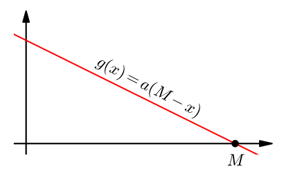

Mayfly model¶
due: Friday, March 13, 8:00 AM
Population models¶
An interesting problem in mathematics is to try to predict changes in populations of people, animals, insects, bacteria etc. How many people will live in the United States in 20 years? If a cell culture in a lab is started with \(x\) cells how many cells will it consist of in 24 hours? Mathematical models used to make such predictions are often complex and involve many factors. Here we will consider a simple population model that may be applicable e.g. to predicting population changes of mayflies. These insects spend a year (or a few years - depending on species) at the bottom of a river, then over a course of a few days emerge from the water, mate, lay eggs and die. In effect only one generation of mayflies is alive at any time. We will assume that the size of population of mayflies in a given year depends only on the size of population in the previous year. If \(x_n\) denotes the size of population in year \(n\) then we can write:
where \(g(x_{n-1})\) is the growth rate of the population (which may depend on \(x_{n-1}\)). Properties of this model will depend of course on what the function \(g(x)\) is.
Mayfly model¶
In a small population there is little competition for resources such as food, space etc. This allows for fast population growth. As the population increases the competition for these resources increases as well, and we can expect that the growth rate will go down. This means that the function \(g(x)\) describing the growth rate should be a decreasing function.
It is also reasonable to assume that the population can grow only up to some maximal size \(M\) which is the largest population that the environment can support. As the population size approaches \(M\) the growth rate should approach \(0\). In effect we can assume that \(g(M) = 0\).
The simplest function satisfying the above conditions is the linear function
for some \(a>0\).
{kind=link}
If we use this function then the equation \((\ast)\) becomes
This equation involves two parameters: \(M\) and \(a\). We can reduce them to one parameter as follows. Define
The equation \((\ast\ast)\) now becomes
Simplifying we obtain
If we denote \(b = aM\) then we get
for some \(b\geq 0\). This is the equation we will be interested in. We will call the population model described by this equation the mayfly model.
Note.
In the mayfly model meaningful values of \(y_n\) are the ones between \(0\) and \(1\) since \(y_n = x_n/M\) and by assumption \(0\leq x_n \leq M\).
For \(b\geq 0\) the maximal value of the function \(b(1-y)y\) is attained at \(y=1/2\) and it is equal to \(b/4\). This means that the mayfly model may break if \(b>4\), since in such case for \(y_n = 1/2\) we will get \(y_{n+1} = b/4 > 1\). To avoid such problems we will assume that \(0\leq b \leq 4\).
Notice that beside the choice of \(b\) the model depends also on the value of the initial population \(y_0\).
Project¶
Analyze behavior of the mayfly model for various values of \(b\) and \(y_0\). Describe your findings, observations and conclusions.